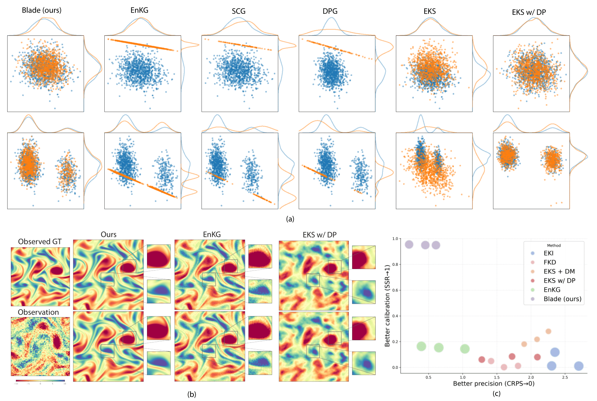

Goal. Given a noisy observation \(y = \mathcal{G}(x^*) + \varepsilon\) from a black-box forward model \(\mathcal{G}\), Blade draws posterior samples \(p(x \mid y)\) that are accurate and well-calibrated—without requiring gradients of \(\mathcal{G}\).
Algorithm. Blade maintains an ensemble of particles and alternates between two update steps (top row of figure):
The original likelihood potential \(f(z;y) = \frac{1}{2\sigma_y^2}\|\mathcal{G}(z) - y\|_2^2\) can have a complex, jagged landscape with local traps (left panel). Blade runs covariance-preconditioned Langevin dynamics, using statistical linearization to approximate \(\mathcal{G}(z) \approx A_t z + b_t\) from ensemble covariances (bottom-left). This turns the potential into a smooth quadratic basin (middle panel), enabling derivative-free updates while avoiding local traps.
A pretrained diffusion model serves as an expressive, data-driven prior \(p(x)\). Unlike standard diffusion that starts from pure noise, the prior step begins denoising at a noise level set by a coupling strength \(\rho\) (right panel).
Interplay. The likelihood step updates particles along data-informed directions within the current span, while the prior step performs global, nonlinear exploration at a scale controlled by \(\rho\). Annealing \(\rho\) from large to small implements a smooth path from a diffuse posterior with good mixing to the sharp posterior.
Result. By iterating these two steps, Blade produces an ensemble of posterior samples all without backpropagating through \(\mathcal{G}\).
Theoretical Analysis. Blade uses approximations—statistical linearization replaces exact likelihood gradients, and a learned diffusion model stands in for the true prior. We establish that Blade converges to the target posterior as more iterations are run, and remains stable even when the forward model and prior are only approximately represented. In other words, small modeling errors lead to small sampling errors, not catastrophic failures.

The Navier-Stokes inverse problem is challenging because the forward model is a highly nonlinear numerical PDE solver that requires hundreds of numerical steps.
(a) Results on linear Gaussian and Gaussian mixture problems. Blue samples are from the ground-truth posterior. (b) Posterior draws from different methods on the Navier-Stokes problem. "Observed GT" marks a single observed ground truth. Blade produces smooth, structured samples with realistic variability, while the competing methods yield noisier samples that get stuck in a single blurred mode. (c) CRPS (continuous ranked probability score) versus SSR (spread-skill ratio) under varying measurement noise levels, with area indicating relative runtime cost. Only Blade produces well-calibrated samples among derivative-free methods.
| Method | σnoise = 0 | σnoise = 1.0 | σnoise = 2.0 | ||||||
|---|---|---|---|---|---|---|---|---|---|
| CRPS↓ | SSR→1 | Rel L2 error↓ | CRPS↓ | SSR→1 | Rel L2 error↓ | CRPS↓ | SSR→1 | Rel L2 error↓ | |
| Paired data | |||||||||
| CDM-CA | 2.900 | 0.983 | 1.362 | 2.872 | 1.059 | 1.409 | 2.993 | 1.087 | 1.542 |
| CDM-Cat | 1.413 | 0.896 | 0.653 | 1.805 | 0.979 | 0.873 | 2.211 | 0.974 | 1.043 |
| U-Net | — | — | 0.585 | — | — | 0.702 | — | — | 0.709 |
| Unpaired data | |||||||||
| EKI | 2.303 | 0.012 | 0.577 | 2.350 | 0.118 | 0.586 | 2.700 | 0.011 | 0.673 |
| EKS + DM | 1.900 | 0.181 | 0.539 | 2.088 | 0.218 | 0.606 | 2.255 | 0.280 | 0.685 |
| EKS w/ DP | 1.280 | 0.061 | 0.336 | 1.723 | 0.085 | 0.455 | 2.094 | 0.080 | 0.547 |
| Localized EKS w/ DP | 1.643 | 0.056 | 0.428 | 1.887 | 0.081 | 0.495 | 2.057 | 0.089 | 0.542 |
| FKD | 1.604 | 0.002 | 0.399 | 1.416 | 0.050 | 0.368 | 1.810 | 0.012 | 0.455 |
| DPG | — | — | 0.325 | — | — | 0.408 | — | — | 0.466 |
| SCG | — | — | 0.961 | — | — | 0.928 | — | — | 0.966 |
| EnKG | 0.395 | 0.164 | 0.120 | 0.651 | 0.154 | 0.191 | 1.032 | 0.144 | 0.294 |
| Blade (diag) | 0.276 | 0.086 | 0.080 | 0.542 | 0.177 | 0.162 | 0.758 | 0.129 | 0.217 |
| Blade (main) | 0.216 | 0.955 | 0.110 | 0.453 | 0.950 | 0.229 | 0.608 | 0.949 | 0.306 |
If you find this work useful, please cite our paper:
@article{zheng2025blade,
title={Blade: A Derivative-free Bayesian Inversion Method using Diffusion Priors},
author={Zheng, Hongkai and Wang, Austin and Wu, Zihui and Huang, Zhengyu and Baptista, Ricardo and Yue, Yisong},
journal={arXiv preprint arXiv:2510.10968},
year={2025}
}This codebase is built upon InverseBench.